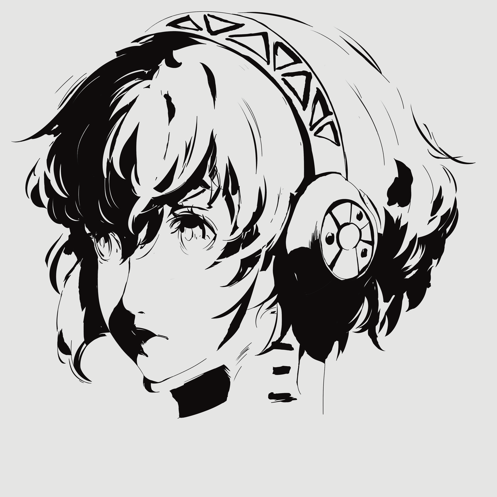
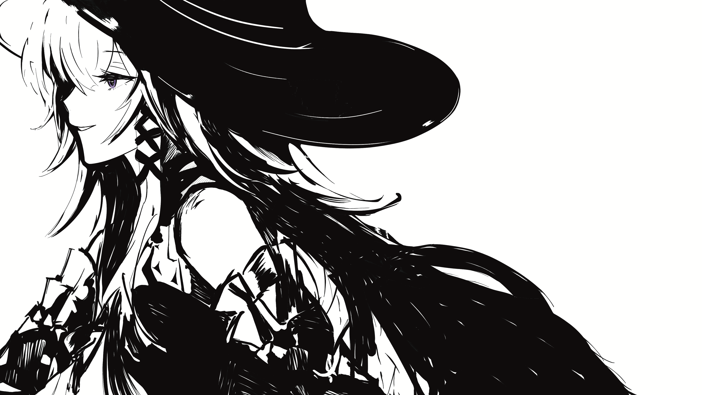
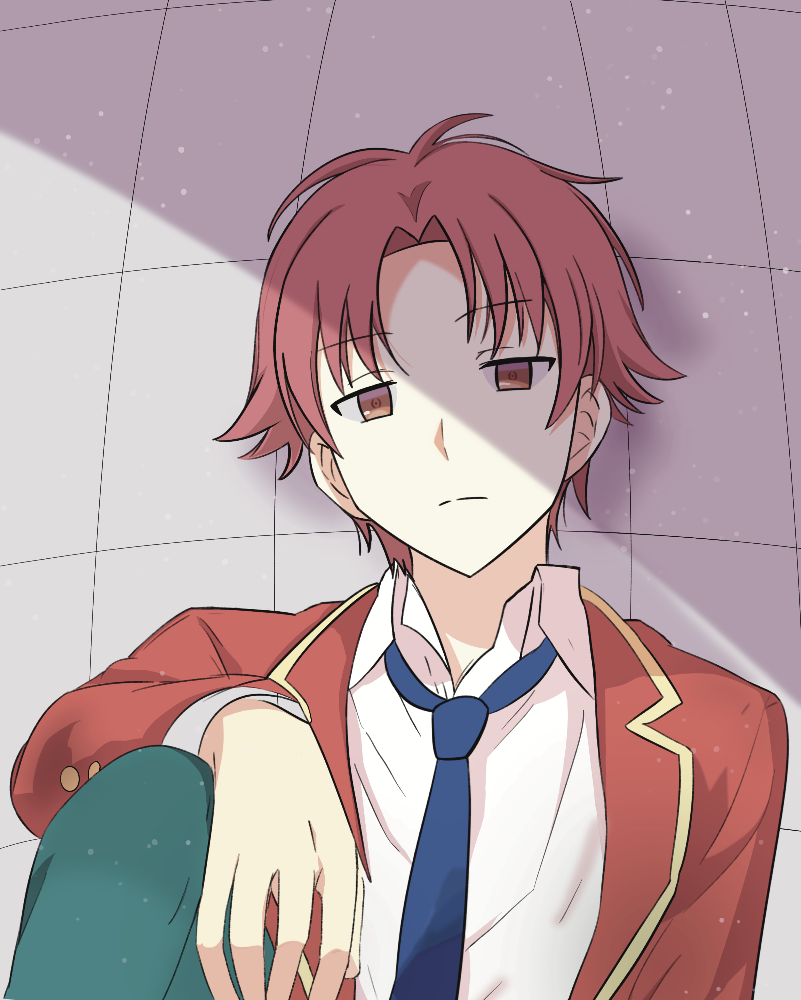

Some of My Artworks
A collection of my personal digital artwork, illustrations, and sketches, mostly
created using Procreate. As I am still early in my artistic journey, these pieces are primarily studies
and recreations of others' artwork as I explore my style.
Gallery

Artwork 1 — short caption. Replace src and text.
Artwork 2 — short caption. Replace src and text.

Artwork 3 — short caption. Replace src and text.
Artwork 4 — short caption. Replace src and text. Artwork 5 — short caption. Replace src and text.
Artwork 5 — short caption. Replace src and text.